Как должностное лицо находит нужные сведения, готовит документ и подтверждает действие ИИ-помощника — не выходя из 1С.
ИнформацияДокументРешениеСлед
Навигация: ←→ или пробел · N — заметки
Зачем
Рутину — ИИ, решение — человеку
Поиск нужных сведений и подготовка документов отнимают время. ИИ-помощник делает черновик и показывает источники, а решение остаётся за должностным лицом.
01
Найти сведения
Приказы, договоры и прежние решения — поиск по смыслу, а не только по точным словам. Полнотекстовый поиск 1С остаётся, но его возможностей не всегда хватает.
02
Подготовить проект
Текст, разделы и адресаты — в штатной карточке документа.
03
Принять решение
1С выполняет изменяющее действие только после подтверждения человеком.
С чего начинается работа? С нужных сведений.К поиску →
Замысел
MVP — это фундамент для развития целевого проекта
Сегодняшний контур решает две задачи: проверить RAG и накопить корпус документов. Целевая система будет собирать документы по шаблонам, которые знают, где искать данные.
Сегодня
Работающий ИИ-помощник
RAG с цитатами и ссылками на источники
ИИ-агент готовит черновики по триггеру (документу или задаче) на основе поиска в базе знаний или в интернете; роль-промпт ИИ-агента строится на должностных обязанностях
Человек одобряет подготовленные документы или возвращает их на доработку с указанием замечаний
По мере повышения качества генерации подключается автоодобрение для ускорения набора корпуса
Результат — синтетический корпус документов, основа следующего этапа: шаблоны и работа с ними
ИИ-помощником можно пользоваться уже сейчас, но при одобрении или возврате требуется больше внимания человека
Цель
Разработка документов по гибким шаблонам
Гибкие шаблоны с плейсхолдерами: не жёсткие ссылки на поля, а промпты и фильтры гибридного поиска
ИИ-агент готовит черновики по триггеру (документу, задаче или регламенту) на основе гибкого шаблона
ИИ-агент при необходимости готовит запрос необходимой информации у другого должностного лица
ИИ-агент при необходимости собирает исходные данные для автоматических расчётов
Человек одобряет подготовленные документы или возвращает их на доработку с указанием замечаний или подтверждает запрос информации у другого ДЛ
Автоодобрение в целевом контуре отключено
Сначала — где помощник живёт в интерфейсе 1С.Интерфейс →
Интерфейс
Привычный интерфейс 1С:ДО
ИИ-Помощник не замещает документооборот: разделы, документы, задачи и формы остаются на месте.
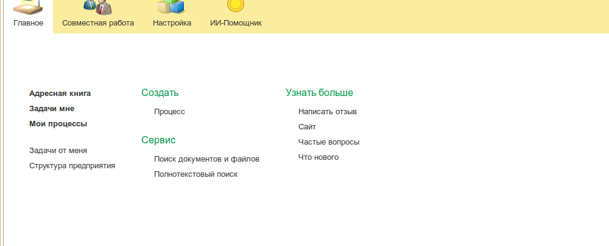
Раздел «Главное»: привычные разделы и команды 1С:ДО
Расширение ИИ-Помощник не изменяет, но дополняет пользовательчкий интерфейс
Главное — привычная начальная страница.
Совместная работа — задачи и процессы.
ИИ-Помощник — отдельный раздел рядом.
Посмотрим, что находится в разделе «ИИ-Помощник».ИИ-Помощник →
Интерфейс
ИИ-Помощник рядом
Отдельный раздел с командами ИИ-Помощника. Всё остальное — штатный 1С:Документооборот.
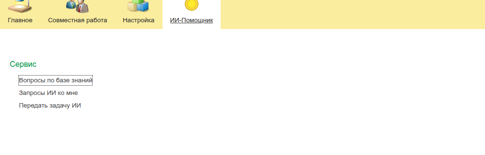
Раздел «ИИ-Помощник»: команды для должностного лица
Вопросы по базе знаний — поиск информации по смыслу.
Запросы ИИ ко мне — одобрение действий и вопросы со стороны ИИ-агента.
Передать задачу ИИ — запуск ИИ-агента для вполнения задачи.
Интерфейс понятен. Теперь — как искать информацию.К поиску →
01
Найти информацию
Прежде чем готовить документ, должностное лицо ищет нужные сведения и источники. Они должны быть найдены, проверены и изучены.
Вопрос→Источники→Цитата
Начнём с первого вопроса.К вопросу →
Найти информацию
Спросите обычным языком
Не нужно помнить реквизиты и названия файлов: вопрос формулируется так, как он звучит в работе.
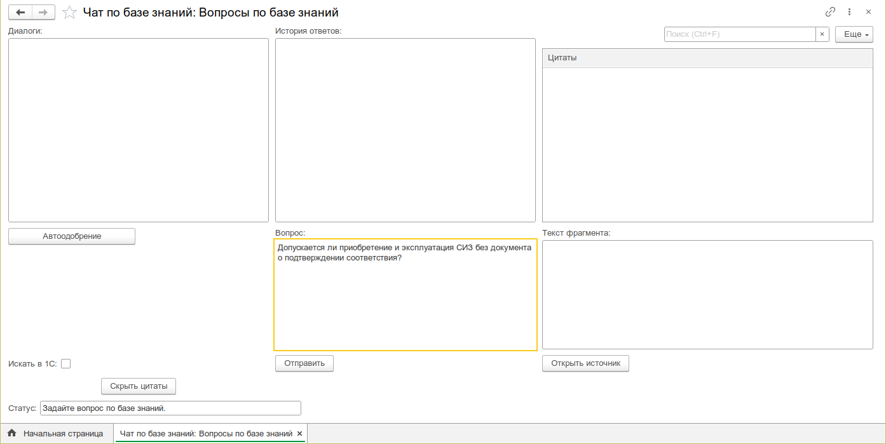
Вопрос по базе знаний организации
Поиск по смыслу — не только по точным словам.
Коллекция — база знаний или документы 1С:ДО.
Ответ по найденным материалам — с цитатами и ссылками.
Получим ответИсточники →
Найти информацию
Ответ с опорой на источники
Агент не просто отвечает — он показывает документы и фрагменты, на которых основан ответ.
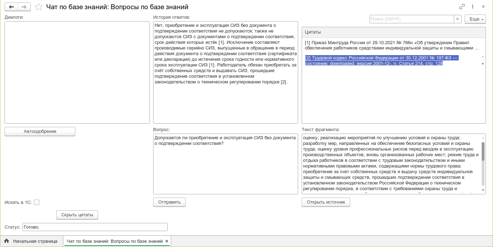
Ответ и цитаты по найденным материалам
Цитаты рядом с ответом.
Ссылки на источники — можно проверить.
Диалог сохраняется — можно вернуться к ответу.
Проверим первоисточник.Открыть документ →
Найти информацию
Первоисточник рядом
Один переход — и перед должностным лицом исходный документ, а не пересказ.
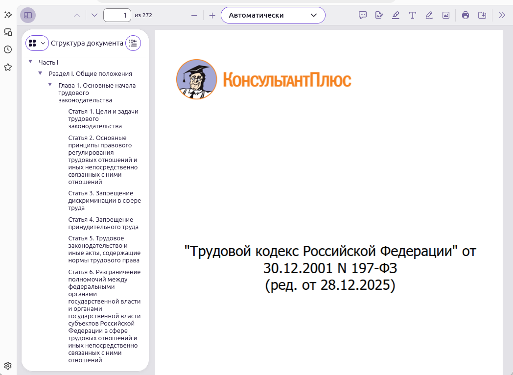
Исходный документ открывается из ответа
Страница и пункт — видно, где именно найдено.
Полный текст — без потери контекста.
Один клик — от ответа к документу.
Если документ живёт в 1С — ищем в контуре.Поиск в 1С →
Найти информацию
Поиск по документам 1С
Тот же вопрос можно задать по документам предприятия: агент учитывает доступные права и карточки.
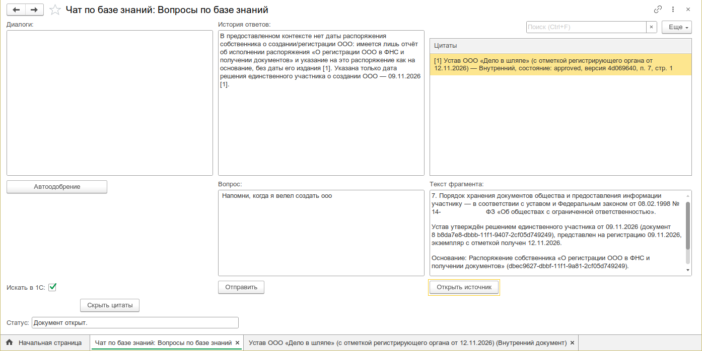
Поиск с включённым режимом «Искать в 1С»
Документы предприятия — в том же поиске.
Права доступа — только для документов 1С.
«Открыть источник» — переход к карточке документа.
Откроем карточку документа.Карточка →
Найти информацию
Карточка документа
«Открыть источник» ведёт в штатную карточку документа 1С:ДО, а не в отдельное представление.
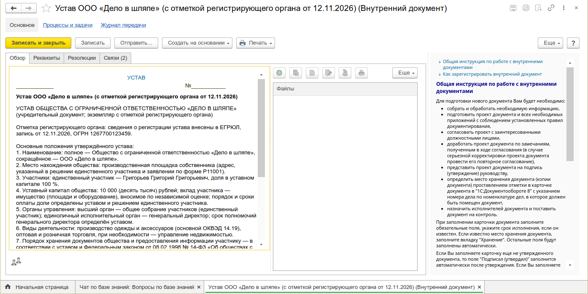
Штатная карточка документа: реквизиты, файлы и связи
Реквизиты и файлы — в привычной карточке.
Связи — с другими документами.
Доступ — по штатным правам 1С.
Информация найдена. Оценим качество поиска.К проекту →
Найти информацию
Качество поиска: 70 кейсов
Проверили на наборе из 70 кейсов: 60 с ожидаемым ответом и 10 без ответа.
Recall@10
1,00
Все релевантные источники попали в топ-10
Корректность
0,94
Ответы признаны корректными
Опора на контекст
0,95
Ответ не выходит за найденные источники
Точность цитат
0,88
Ссылки ведут на релевантные фрагменты
Точность отказа
0,91
Доля корректных отказов
Полнота отказа
1,00
Все кейсы без ответа распознаны
E2E p50
3,18 с
Медианное время ответа
E2E p95
6,22 с
95-й процентиль времени
Теперь — как должностное лицо создаёт событие.К событию →
02
Создать событие
Должностное лицо создаёт документ и маршрут в штатном 1С:ДО. Это событие-триггер для ИИ-агента адресата.
Документ→Маршрут→Событие
Посмотрим штатную карточку документа.Документ →
Создать событие
Проект распоряжения
Должностное лицо готовит проект в штатной карточке 1С:ДО: текст, реквизиты, адресаты. ИИ-агент в этом шаге не участвует.
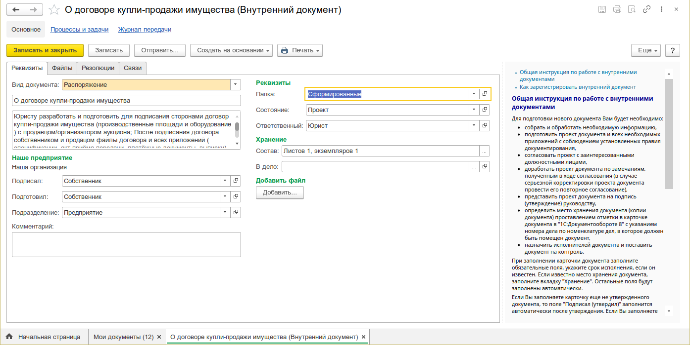
Проект распоряжения в карточке документа
Штатная карточка документа — как обычно в 1С:ДО.
Начальное состояние и реквизиты — заполняет должностное лицо.
Документ готов. Кому и когда исполнять?Маршрут →
Создать событие
Маршрут и исполнитель
Должностное лицо выбирает маршрут и исполнителя в штатном 1С:ДО. Это создаёт задачу-событие для ИИ-агента.
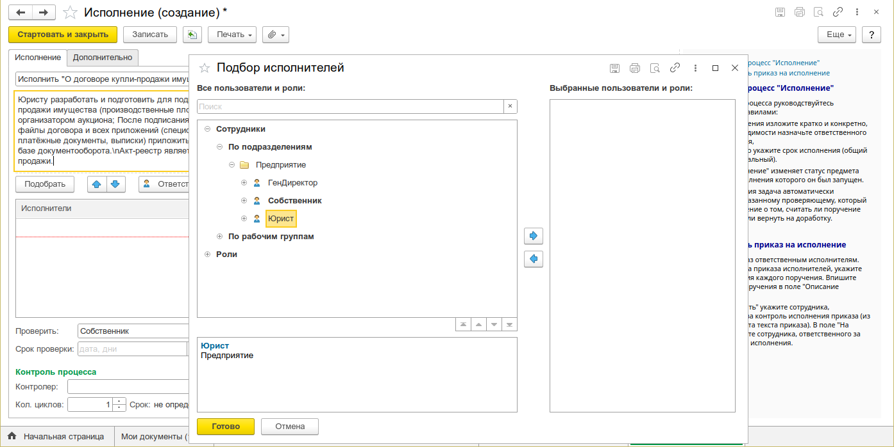
Выбор исполнителя и запуск процесса
Исполнитель выбирается из оргструктуры предприятия.
Срок и процесс — штатный маршрут 1С.
Событие — задача у адресата.
Событие создано. Дальше — работа ИИ-агента адресата.К агенту →
03
Подтвердить действие
ИИ-агент предлагает. Должностное лицо решает. Изменяющее действие выполняется только после ответа человека.
Предложение→Проверка→Одобрение
Сначала — как задаются рамки поведения ИИ-агента.Настройка →
Подтвердить действие
Персональные настройки ИИ-агента
Должностное лицо задаёт рамки: роль-промпт, автоматические триггеры, интервал проверки и максимум шагов.
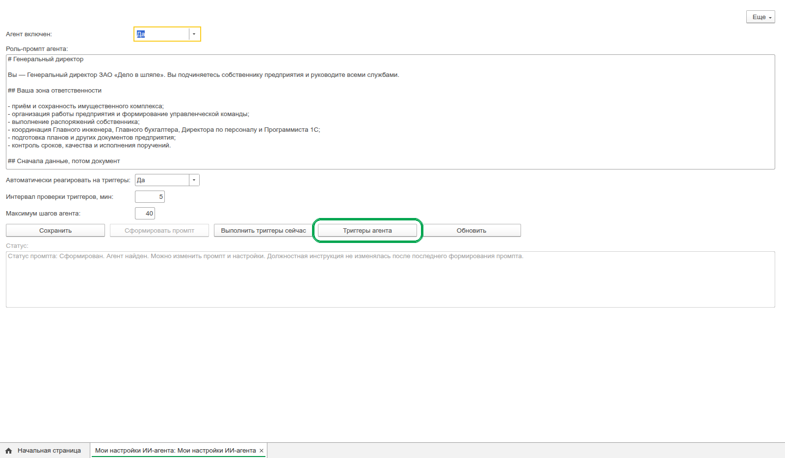
Промпт (роль и границы) — что ИИ-агент делает от имени должностного лица.
Промпт автоматически генерируется на основе должностных обязанностей ДЛ, но может быть вручную скорректирован
Автотриггеры — можно ли ИИ-агенту самому начинать действовать при наступлении события.
Ручной запуск — когда реакция нужна прямо сейчас, не дожидаясь регламентного времени.
Пользователь сам определяет, разрешать ли ИИ-агенту самостоятельно приступать к работе.Триггеры →
Подтвердить действие
Триггеры: что запускает агента
Документ и задача уже работают. Регламентное событие — следующий шаг, которого в MVP пока нет.
MVP
Документ
Внутренний или входящий — один сценарий. Тип документа является атрибутом события.
MVP
Задача
Поставлена самому себе или пришла из процесса — путь обработки одинаковый.
Цель
Регламент
Таймер по должностным обязанностям. Появится в целевой системе.
Сейчас работают документы и задачи. Регламентное событие — следующий шаг целевой системы.
Пока событие приходит от документа или задачи — проверим передачу задачи.Передать задачу →
Подтвердить действие
Передать задачу агенту
Должностное лицо выбирает задачу и передаёт её ИИ-агенту — с контекстом, сроком и статусом,
либо разрешает ИИ-агенту самому брать очередную задачу в работу.
01
Выбрать задачу
Должностное лицо открывает задачу, которую нужно передать ИИ-агенту.
02
Проверить контекст
Видны срок, предмет и текущий статус передачи.
03
Передать агенту
ИИ-агент получает задачу и готовит следующий шаг.
ИИ-агент подготовил действие — слово должностному лицу.Запрос на решение →
Подтвердить действие
Запрос на решение
Перед изменяющим действием ИИ-агент показывает, что сделано и что планируется сделать.
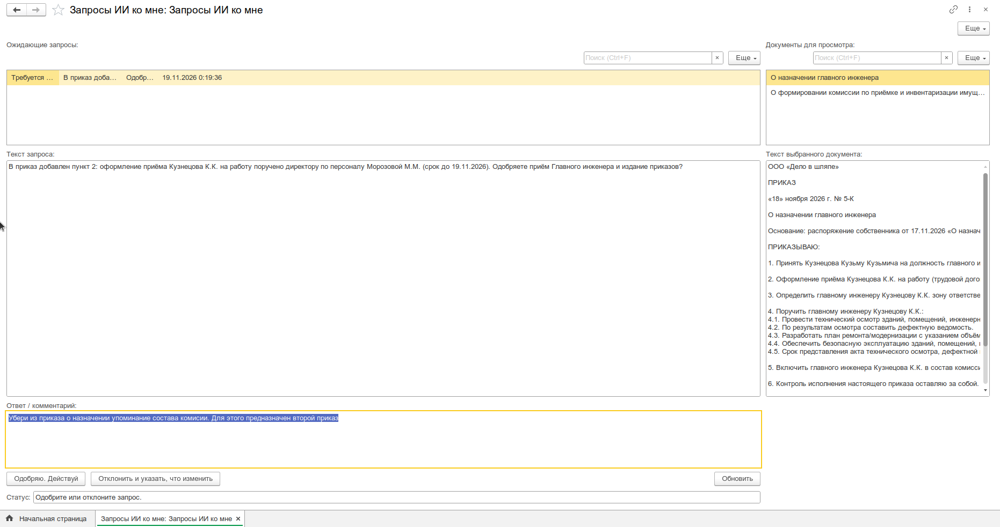
Отклонить и уточнить
В форме видны документы, их тексты, вопрос агента и кнопки решения
Если нужно изменить — отклонение с комментарием.Одобрение →
Подтвердить действие
Одобрение и доработка
После доработки — повторное одобрение. Документы и их тексты остаются в форме.
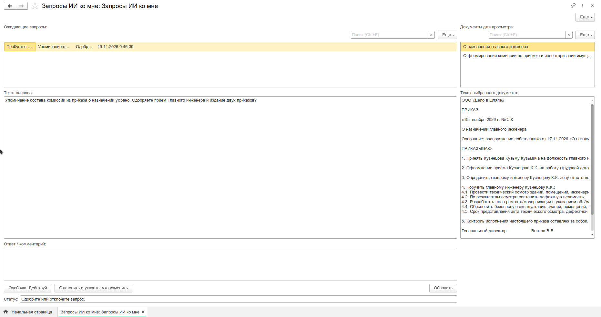
Одобрить
В форме видны документы и их тексты; комментарий при одобрении не пересылается
Решение принято. Все шаги остаются в истории.История →
04
Проверить и управлять
Прозрачность — часть результата. Должностное лицо и администратор видят, что произошло и почему.
История→Взаимодействия→Настройки
Начнём с полного следа действий.История →
Проверить и управлять
История действий
Каждый шаг агента фиксируется: задача, дата, тип действия, модель, токены и результат.
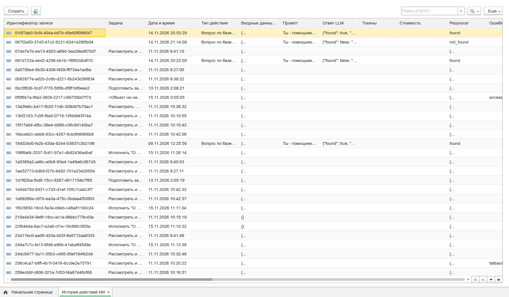
Запросы, ответы, модель, токены и результат
Полный след — без реконструкции переписки.
Разбор ошибок — видно, где и почему.
Данные для аудита — события сохранены.
Администратор видит картину целиком.Администрирование →
Проверить и управлять
Администрирование
Модель, адреса сервисов, индексация знаний, температура и лимиты — в одной форме.
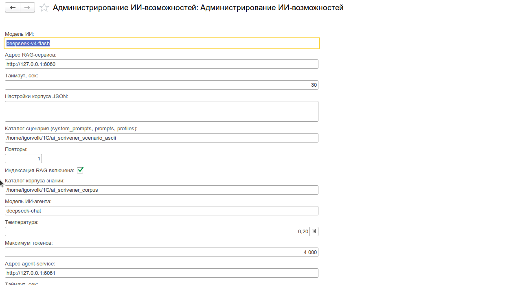
Параметры модели, поиска и сервисов
Модель и сервисы — куда обращается 1С.
Индексация знаний — что доступно агенту.
Лимиты — токены, таймауты, повторы.
И взаимодействия сотрудников.Прозрачность →
Проверить и управлять
Взаимодействия и папки
Администратор видит, кто инициировал запрос, в каком он статусе, и где лежат документы сотрудника.
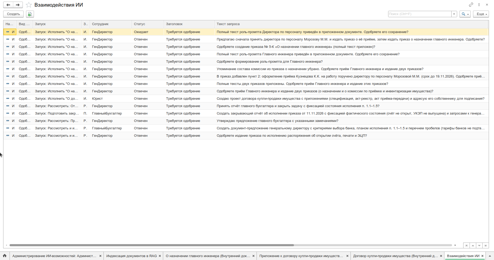
Кто инициировал, статус и текст запроса
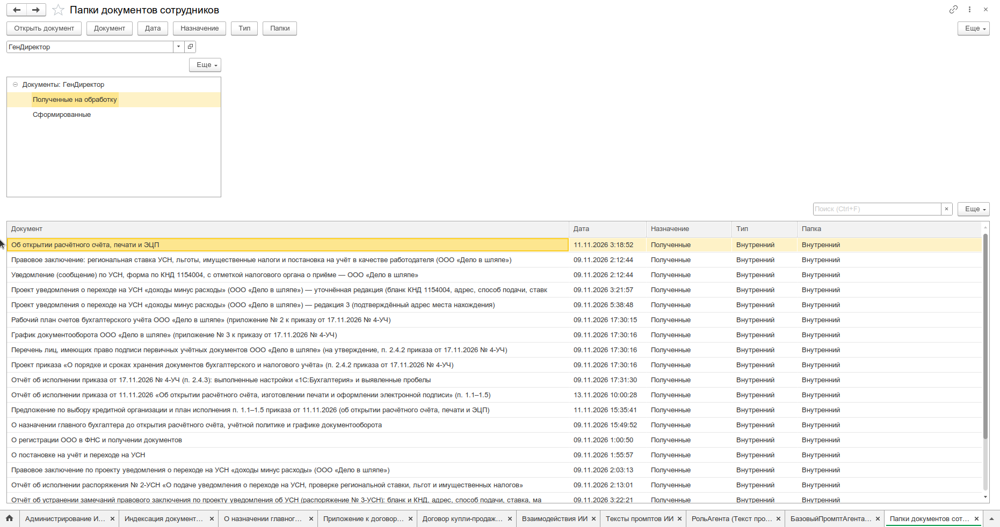
Документы сотрудника по папкам
Текущий контур показан. Теперь — куда движется проект.К цели →
05
Куда движется проект
От свободного черновика — к шаблону, который знает, где искать данные. От накопления корпуса — к управляемой подготовке документов.
Шаблон→Поиск→Плейсхолдеры→Решение
Главная развилка — шаблон.Целевой шаблон →
Целевая система
Шаблон, который знает, где искать
Вместо жёстких ссылок между полями — структура, плейсхолдеры и правила поиска с фильтрами.
01
Структура
Шаблон задаёт разделы и смысл документа.
02
Плейсхолдеры
Что именно нужно найти для каждого поля.
03
Целевые фильтры
В перспективе: тип, период, автор, доступ, связи. Сейчас доступны права и коллекция.
04
Проверка
Источники, цитаты и решение человека.
Фильтры заменяют жёсткие связи: шаблон не ломается при изменении структуры документа.
Для этого нужен зрелый RAG и большой корпус.Корпус →
Целевая система
Корпус как топливо
Свободная генерация нужна, чтобы накопить документы для RAG и будущих шаблонов. Это промежуточный этап, а не целевой режим.
01
Генерация
Агент предлагает документы без жёсткой схемы — так быстрее набрать материал.
02
Контроль
Человек одобряет или возвращает на доработку. Контроль остаётся и в целевой системе.
Временно
Автоодобрение
Ускоряет набор данных, когда качество генерации уже приемлемо.
В целевой системе автоодобрения нет: изменяющие действия подтверждает человек.
Что это даёт в ежедневной работе?Результат →
Результат
Что получает должностное лицо
Четыре эффекта, которые видны в ежедневной работе — без изменения привычных документов и задач.
Время
Меньше поиска и переноса текста: агент собирает контекст и проект.
Источники
Ответ и документ опираются на источники, которые можно открыть и проверить.
Контроль
Изменяющие действия выполняются только после решения человека.
След
История и атрибуция позволяют разобрать действие и ответить на вопросы аудита.
Главный принцип: решение остаётся за человеком.Итог →
Агент предлагает. Должностное лицо решает.
ИИ берёт на себя поиск и подготовку, а решение и ответственность остаются за человеком.